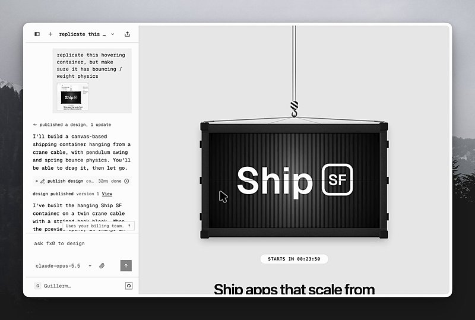
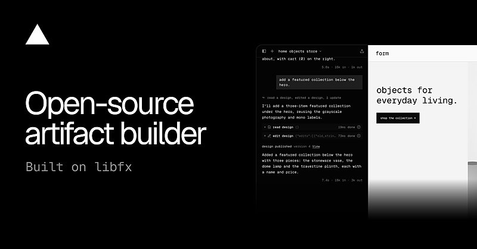

AI 日报 · 10月21日
AI 走进长期流程，恢复与协作成为关键
OpenAI 收购药物研发流程平台 Orchestra Bio；Vercel 发布用于恢复中断 Agent 任务的 durable-harness。Builder 同时讨论企业领域工作流、共享 Agent 与任务优先级：模型能力之外，持续运行、可追溯和人类决策开始成为产品核心。
药物研发
持久执行
企业 Agent
协作流程
4
Builder 动态
4
今日上榜项目
2
官方文章
1
公开视频
今日要点
OpenAI 收购 Orchestra Bio
OpenAI 10 月 20 日宣布收购药物研发协调平台 Orchestra Bio，计划把其团队与技术同 Rosalind 工具结合。公告描述的是协助跟踪研究、识别延误和整理应对方案的目标；没有给出药物获批提速的实测结果。
Vercel 发布 durable-harness
Vercel 10 月 19 日介绍面向 Pi、OpenCode、Codex 和 Claude Code 的持久执行适配层：逐步记录模型与工具调用，函数中断后读取日志继续。已完成调用读取记录；无法安全重放的工具会被标为可能已执行，仍需后续核对。
深度对话
Every：从员工个人 Agent 转向公司共享 Agent
Every 的 Dan Shipper 与平台负责人 Willie Williams 在原频道视频中回顾其内部实践。团队曾为员工配置个人机器人，后来转向在 Slack 中共享的公司 Agent；以下是团队经验与受访者判断，并非适用于所有组织的结论。
维护负担决定组织形态
Williams 说多个个人机器人逐渐难以维护，也不易让同事记住各自能力。共享入口让团队成员更容易看见请求、修正和复用流程。
工作与个人场景可能分开
他预测工作场景会偏向积累公司流程的共享 Agent，个人生活则更适合私人 Agent；这仍是受访者对产品方向的判断。
管理工作仍需要人判断
Williams 认为 Agent 可以汇总会议、Slack 与运行数据，帮助发现异常；团队沟通和瓶颈处理仍由人负责。
资讯精选
官方原文与近期讨论
OpenAI｜把 Rosalind 接入研发流程
OpenAI 介绍 Rosalind 的研究工具与 Orchestra 的项目协调平台将如何结合；文中的药物研发时间为行业背景，不应读作此次收购带来的缩短幅度。
Every｜共享 Agent 的团队实验
Every 介绍在 Slack 中让同事共享同一 Agent 的做法；这是该团队对自身协作与维护成本的取舍，不代表个人 Agent 在其他场景失效。
Builder 动态
运行、专精与注意力
Guillermo Rauch｜开放 HTML 产物构建器
Vercel CEO 介绍开源 HTML artifact builder，称它由 libfx 驱动，并展示一个悬浮集装箱页面。他强调此前处理服务崩溃、模型不稳定和函数时限的基础设施工作；原帖未提供通用性能基准。


Aaron Levie｜领域工作流可能更重要
Box CEO 认为模型能处理更长任务并使用更多工具后，企业产品的差异可能来自领域数据、路由、流程协调与变更管理。他明确将其作为对应用层的判断，而非已有市场统计。
Thariq｜多 Agent 工作也要确定首要任务
Thariq 提醒同时与多个 Agent 工作的人放慢速度，先问当前最重要的任务是什么，以及投入完整注意力会带来什么。观点针对任务选择，并未声称并行本身无效。
Nikunj Kothari｜体验有期限的专题对话
Nikunj 分享使用 Wabi 2.0 预览版的个人体验：主 Agent 按旅行、报税等主题建立可共享、可归档的临时对话。他同时认为产品过于主动、应用体验仍需改进；这些都是用户体验评价。
GitHub Trending
今日榜单的四个项目


按 10 月 21 日 GitHub Trending 实时榜单筛选，避开近两期重点；星标、分叉与语言来自当次 GitHub API 快照，随后会变化。功能描述按仓库自述整理。
今日思考
今天的来源跨越药物研发、编码 Agent 和团队协作，但都指向长期流程：任务要能在中断后恢复，记录要能解释发生了什么，专题对话要在合适时归档，关键决策要回到负责的人。今日一问：你的 Agent 中断一次后，团队能否说清哪些步骤已完成、哪些动作可能重复、谁来决定继续？
参考来源
OpenAI｜收购 Orchestra Bio
Vercel｜Making every harness durable
Every｜共享 Agent 团队说明
Every｜Willie Williams 访谈视频
Every｜访谈逐字稿
Guillermo Rauch｜HTML 产物构建器
Aaron Levie｜企业 Agent 专精
Thariq｜Agent 任务优先级
Nikunj Kothari｜Wabi 2.0 体验
GitHub｜10 月 21 日 Trending
cloudflare/security-audit-skill
Graphify-Labs/graphify
anthropics/knowledge-work-plugins
ruvnet/ruflo